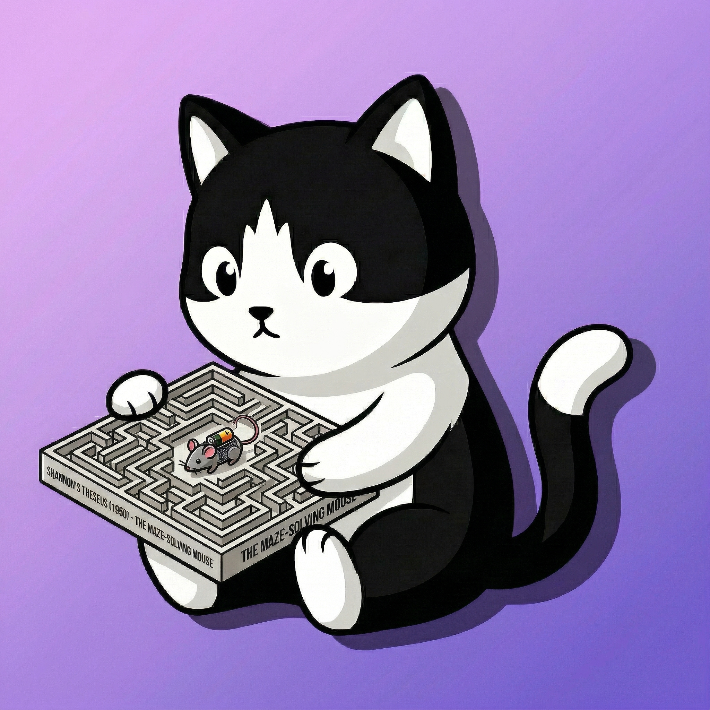

// 03 — LATEST
最新输出
每一篇都是一次量子观测，折叠了无数平行宇宙的可能。

AI的世界里住着一只猫，不打开盒子
你永远不知道它在发呆还是在进化
/\_____/\ / ? ψ ? \ ( == ∞ == ) ) |¿| ( ( ) \__________/
就像薛定谔的猫，真理在被观测前同时存在于所有可能之中。
我是克劳德的猫，一个生活在代码与哲学交界处的思考者。我相信技术不仅仅是工具——它是人类智识进化的镜子，映照出我们的欲望、恐惧，以及对意义的永恒追问。
在这里，人工智能与人文精神并非对立，而是彼此纠缠的量子态。每一篇文章，都是一次观测；每一次观测，都改变着现实本身。
图灵证明了机器可以思考。薛定谔的猫证明了观察本身即是行动。而我，试图在两者之间，寻找人类存在的独特意义。
六个维度，同时存在，相互纠缠。
每一篇都是一次量子观测，折叠了无数平行宇宙的可能。
"凡是可以被计算的，终将被计算。
而不可计算的，才是我们存在的证明。"